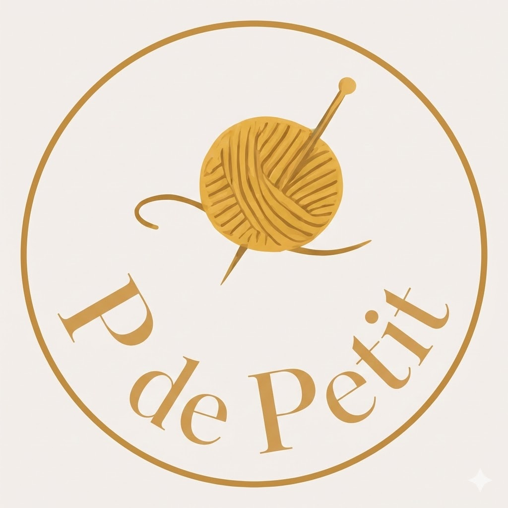

Hecho a mano
Las piezas no salen idénticas, y ahí está parte de su encanto: cada una conserva el gesto del tejido.

P de PetitP de Petit
P de Petit es un proyecto de piezas tejidas a mano en Valencia, pequeñas series y encargos cuidados. Cada creación se trabaja punto a punto, con atención a la textura, el volumen y el color.
Las piezas no salen idénticas, y ahí está parte de su encanto: cada una conserva el gesto del tejido.
Trabajo por disponibilidad y encargos, para cuidar tiempos, materiales y acabados.
Antes de comprar por Vinted, hablamos para asegurar que eliges la pieza correcta.